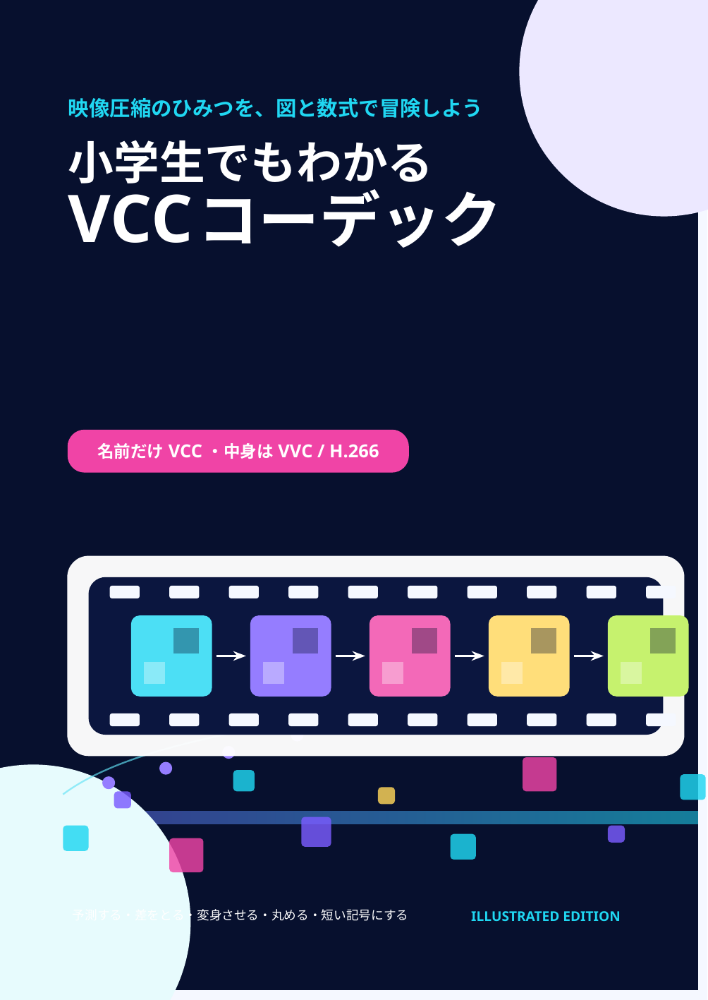

動画は、どうして小さくできるの？ 予測・変換・量子化・CABACまで、カラフルな図とやさしい数式で読み解く入門書です。
※ 本のタイトルでは「VCC」としていますが、扱っている正式な映像符号化規格は VVC（Versatile Video Coding）/ H.266 です。
ブロック分割、予測、変換、フィルターなどを、流れが見える図解で説明します。
難しい記号だけにせず、具体的な数字と手計算を使って「なぜ小さくなるか」を追います。
VVCのブロック分割、予測、変換、量子化、CABAC、ループフィルターまで段階的に紹介します。
このブラウザでは埋め込みPDFを表示できません。PDFを直接開いてください。
スマートフォンでは、上の「PDFを読む」ボタンから直接開くほうが読みやすい場合があります。